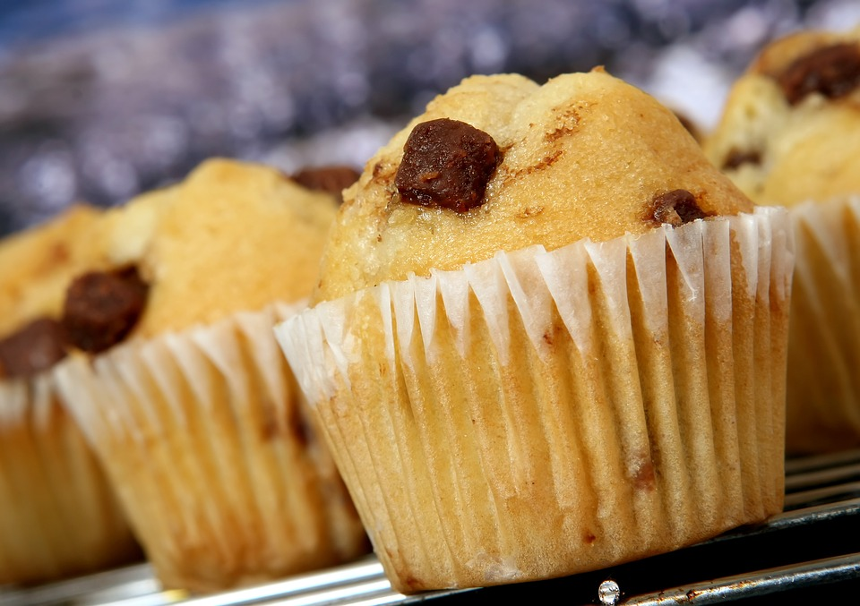

HELLO AND WELCOME !
My name's Eric. Thanks for visiting! Allow me to showcase a few of my favorite types of pie.

Strawberry pie is a solid go-to pie. It's always available for you to eat. It's never let you down. It's a pie that's earned its time, for sure, but it just doesn't stand out to you. I mean, you wouldn't hate to eat a slice of strawberry pie, especially with a can of whipped cream on standby, but you've never heard anyone rave about it during family dinner. Unless you count Aunt Gertrude, but you never really viewed her opinion on food quite the same since the Great Fruitcake Incident of '96.

Pumpkin pie is the Uncle Joe of pies. You're glad to see him for the holidays, and he has a grand time with your family for Thanksgiving. But after it's all over, you don't see him again until the next year. You miss him. He misses you. But life moves on, and when the Thanksgiving hullabaloo peters out, Uncle Joe just can't stay in the guest room for a whole year. Neither can the pumpkin pie. It's all fun and games until the pie can't afford to pay rent.

Ah, the classic apple pie. The kind of pie that's universally likable. The kind of pie you put in a napkin and munch on during your commute. The kind of pie that you eat for breakfast and don't feel too bad about because it inexplicably feels healthier than all those other butter-frosted crust hunks. You could compare a good apple pie to your Grandma Higgins. This is the pie that's truly welcome all year round.

You can't forget the black raspberry pie. Tragically underrated, you've always said. Top a fresh piece of black raspberry pie with vanilla ice cream and you're a happy camper, at least if you call sitting in your linen couch watching Parks and Rec camping. And you know your nephew Hans would be proud of you and your pie no matter where you camp. You know he appreciates just about anything when it gives him a purple tongue to unabashedly show off to his sister.
|  |
terrificGreat, you made it! If you're interested in the rest of this neighborhood, there are a few links at the top of the page just for you. If you want to sit and chat for a while, I can tell you about my interests. I enjoy racquetball, smooth jazz, and raspberry tea. I also do web development with occasional stock photos of muffins. You can also contact me by using the contact button above. I may not have made a form for that button by the time you read this, so if you can't get in touch, you can write to me on social media and draw up a passive-aggressive commentary explaining the importance of keeping in touch with my kinfolk via contact forms. |